Top-1 accuracy 0.918 (classifier only) → 0.951 (with HMM), mean over trips; route F1 0.936; route continuity 1.000
All numbers in this report come from the CSV/JSON files written by the scripts in the repository
(results/) and can be reproduced with scripts/01_eda.py … scripts/07_report_assets.py (seed 42).
1. Problem and System Overview
GPS fixes from a moving vehicle contain errors of several metres. These errors can place the vehicle on a parallel street or on the opposite
carriageway. PathSnap reconstructs the road segments actually travelled. For every GPS observation, it predicts the directed arc of the trip's road network that the vehicle was on, and it then assembles these arcs into a connected route.
The pipeline has four stages:
Candidate generation: up to 10 arcs within 60 m of each GPS point.
Candidate classification: a supervised model estimates the probability that each candidate is the true arc.
Sequential decoding: an HMM whose emissions are the classifier probabilities and whose transitions come from road-network distances, decoded with Viterbi.
Route assembly: gaps between consecutive matched arcs are filled with shortest paths.
The system is deployed on two laptops. Laptop 1 runs the FastAPI backend, which holds the model, the decoder and the server-side evaluation. Laptop 2 runs the browser UI used by the evaluator.
Development-stage model comparison and the classifier-vs-HMM comparison only
Evaluator testing
10
19,674
Received only on evaluation day, after all development was finished. Used only for final inference through the API; never used for training, tuning, feature or model selection (Section 7.1)
2. Dataset Understanding and Exploratory Data Analysis
Partitions: all statistics in this section use the training and student-testing partitions (shown separately in each table and plot). Each trip folder contains .track (lon, lat, t), .nodes (lon, lat, row = node id), .arcs (from, to; row = arc id, directed) and .route (ordered arc ids = reference route). Source: scripts/01_eda.py → results/eda/.
Statistic
Train
Student-test
Trips / total GPS points
80 / 208,417
10 / 19,160
GPS points per trip (min / median / max)
361 / 1,529 / 19,313
262 / 1,420 / 3,958
Road nodes per trip (median) / arcs per trip (median)
Reading and validation. Each trip is read with data_io.load_trip. Timestamps are sorted defensively; EDA confirmed they were already strictly increasing. Coordinate order was verified as (longitude, latitude).
Missing-value analysis: no missing or non-finite values in any file, and no non-increasing timestamps. Data-quality problems appear instead as time gaps and as label/geometry disagreements (below).
Projection. Trip centres span longitude −100.4…137.2 and latitude −34.6…61.7, so no single UTM zone fits. Each trip is projected with an azimuthal-equidistant projection centred on its median GPS position. Distances are therefore in metres and almost exact at city scale. Euclidean distance in degrees would be wrong because a degree of longitude shrinks with latitude.
Label derivation..route lists the arcs driven but not which GPS point belongs to which arc (about 6.7 points per route arc on training trips). We align points to route positions with a monotone dynamic programme:
D[i, j] = min(dist(p_i, arc_route[j]), 200 m) + min over k ≤ j of D[i−1, k]
This keeps the temporal order of the route, so routes that revisit or cross the same road are handled correctly. Labels whose aligned arc is more than 60 m away are marked unreliable (−1).
Trip exclusion (training only). Two training trips have fewer than 50 % reliable labels and were excluded from fitting, though not from EDA:
00000054: the vehicle drives about 4.7 h at roughly 7 m/s inside a ~1 km area with no mapped roads (median 87 m from any arc), so the reference route cannot describe these points.
00000033: GPS points lie on mapped roads (about 7 m away) that are missing from the reference route.
No student-test trip was filtered.
Candidate generation. Arcs near the track are sampled every 10 m into a KD-tree. For each GPS point we query 64 samples, compute exact point-to-segment distances, and keep up to 10 distinct arcs within 60 m. Mean candidates per point: 7.6. Candidate miss rate (true arc not in the set): 1.1 % on train (including the two noisy trips) and 0.16 % on student-test.
2.2 Patterns observed, features extracted and why
Arc ids are trip-local. Every trip has its own network, so arc ids cannot be learnt. We therefore reformulated the problem as binary candidate classification: “is this candidate the true arc?”, with features that do not depend on the trip. The positive rate is 14.2 % (one positive among about 7 candidates).
92 % of arcs have a reverse twin (two-way streets), so direction must be modelled. Hence the heading features: the angle between the GPS movement direction (pi−2→pi+2) and the directed arc bearing.
GPS noise is small but heavy-tailed (median 4.6 m; tail beyond 50 m). Absolute distance alone is ambiguous on dense networks, so we use relative distance features (difference from and ratio to the closest candidate, and rank).
The vehicle stays on an arc for several seconds at 1 Hz. Context features measure the distance of points i−3…i+3 to the same candidate arc. This smooths single-point noise before any HMM.
Points project beyond segment ends near junctions. The beyond_m and t_frac features capture this.
Irregular gaps exist, up to 153,064 s in train trip 00000090. We add dt_prev and dt_next and handle gaps in the decoder.
The final 21 features are dist, dist_rank, dist_minus_min, dist_ratio, n_cand, t_frac, beyond_m, log_arc_len, heading_valid, cos_heading, abs_heading_deg, speed_mps, dt_prev, dt_next, ctx_mean_dist, ctx_max_dist, ctx_mean_minus_min, ctx_rank, has_reverse, out_deg, in_deg. The deployed XGBoost assigns most of its gain to relative distance (45 %), heading (28 %), distance rank (9 %) and context (9 %) (Fig. 2.4).
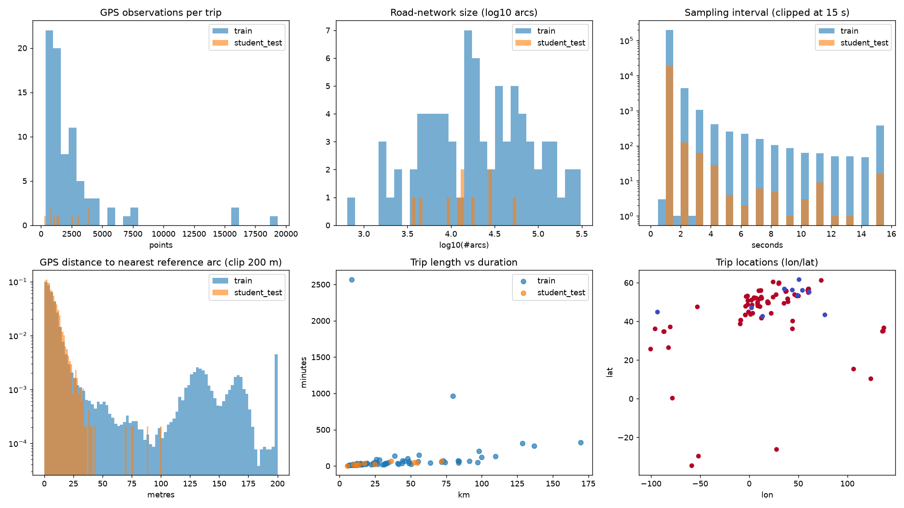
Fig. 2.1 – EDA overview (train vs student-test): points per trip, network size, sampling interval (log scale), GPS-to-reference distance (log), trip length vs duration, and trip locations worldwide.
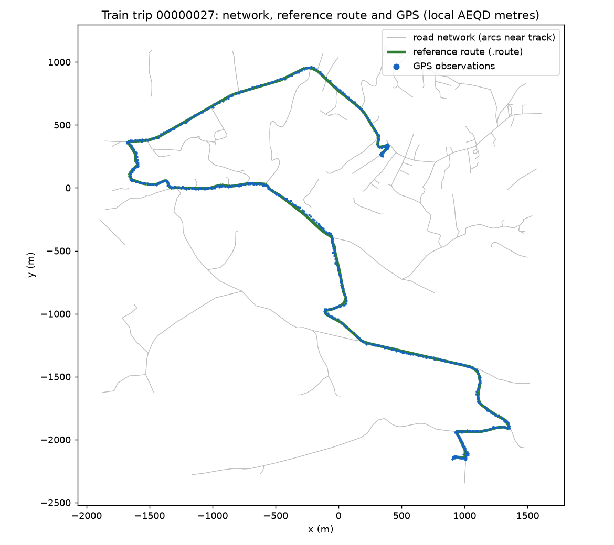
Fig. 2.2 – Road-network visualisation, train trip 00000027: network arcs near the track (grey), reference route (green) and GPS (blue), in local metres.
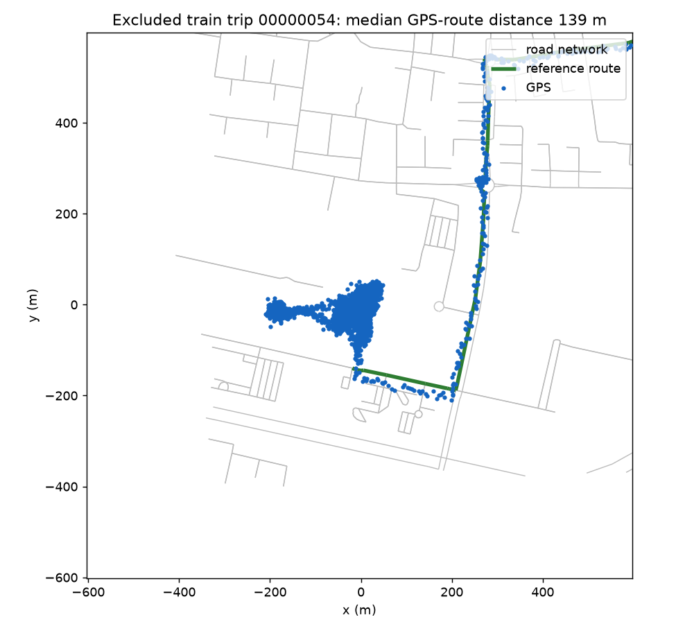
Fig. 2.3 – Excluded train trip 00000054: a dense GPS cluster moving off the mapped network, about 140 m from the reference route, which makes the labels unreliable.
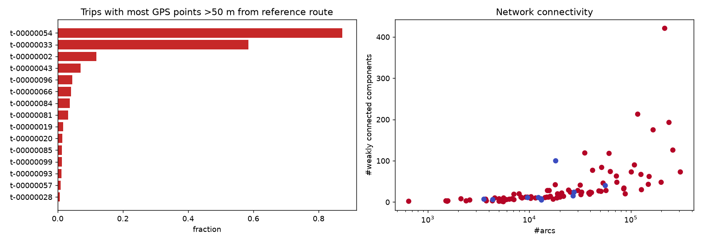
Fig. 2.6 – Trips with most GPS points more than 50 m from the reference route (left); network connectivity (right).
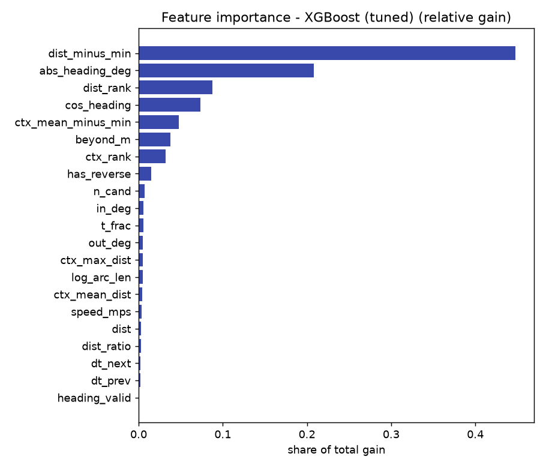
Fig. 2.4 – Feature importance of the deployed tuned XGBoost (share of total gain).
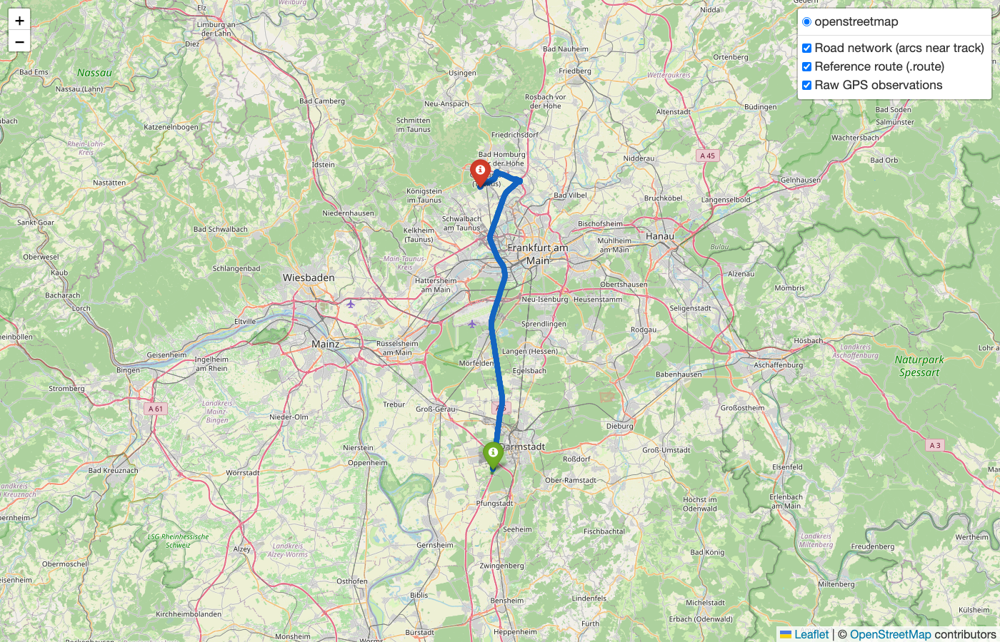
Fig. 2.5 – Folium map (train trip 00000001): raw GPS (blue), reference route (green), road network near the track (grey), start and end markers, with a layer control. Interactive HTML: results/eda/map_train_00000001.html; overview of all trip locations: results/eda/map_world.html.
3. Model Experimentation and Comparison
Protocol (scripts/03_train_models.py):
Data. Seven models from seven algorithm families were trained on the same 21 features, using 1,251,618 labelled candidate rows from the 78 usable training trips.
Cross-validation. 5-fold GroupKFold by trip, so no trip is split across folds. Neighbouring 1 Hz observations are near-duplicates, so a random split would leak information.
Student-test evaluation. Each model was refit on all training trips and evaluated once on the 10 student-test trips.
Primary selection metric: CV observation-level Top-1 accuracy, because that is exactly what is passed to route reconstruction (“is the highest-scoring candidate the true arc?”). Tie-break: lower CV log loss, because the HMM consumes the probabilities as emissions.
Candidate-level metrics. Accuracy, precision, recall, F1 and confusion matrices use a 0.5 threshold. Macro averaging gives the minority “true arc” class equal weight.
Route continuity. The fraction of consecutive argmax predictions that are the same arc or directly connected.
Reproducibility. Random seed 42 everywhere. Full logs: results/models/experiment_log.json.
3.1 Overall model comparison
Model
Algorithm family
Key configuration
CV Macro F1 (±sd)
Top-1 accuracy (test)
Route continuity (test)
Student-test Macro F1
Log loss (test)
Inference time (test, s)
Logistic Regression
Linear / probabilistic
StandardScaler, L2, C = 1.0
0.9193 (0.012)
0.8711
0.9454
0.9159
0.1042
0.03
Gaussian Naive Bayes
Probabilistic (generative)
var_smoothing = 1e-9
0.7939 (0.011)
0.8582
0.9329
0.7900
0.8308
0.02
KNN
Instance-based
k = 50, distance-weighted, scaled, 80 k-row training sample
Top-1 accuracy, route continuity, F1 and log loss in the table are student-test values. CV Top-1 (5-fold mean): LR 0.8785, GNB 0.8619, KNN 0.8701, RF 0.8915, LightGBM 0.8903, XGBoost 0.8916, MLP 0.8862. Ranking by CV Top-1 (tie-break CV log loss): XGBoost, RF, LightGBM, MLP, LR, KNN, GNB. Training times on all training trips: LR 2.9 s, GNB 0.2 s, KNN 0.01 s (lazy), RF 106.9 s, LightGBM 16.0 s, XGBoost 15.9 s, MLP 16.9 s. Source: results/models/model_comparison.csv, cv_folds.csv.
Why XGBoost was selected. XGBoost and Random Forest have essentially tied CV Top-1 (0.8916 vs 0.8915). XGBoost was chosen because it has:
the best CV log loss (0.0855) and student-test log loss (0.0745), i.e. better probabilities for the HMM;
about 4× faster inference than RF and LightGBM, which matters for the live API;
about 7× faster training than RF.
Fold-to-fold standard deviations of CV Top-1 (≈0.025) are larger than the differences between the top three models. All three tree ensembles are therefore equally good classifiers here, and the deciding factors were probability quality and speed.
3.2 Per-model analysis
Over/under-fitting evidence comes from results/models/train_vs_cv_vs_test.csv. Each model was refit on all training trips and re-scored on those same trips; this is compared with its CV and student-test scores.
Model
Train Top-1
CV Top-1
Test Top-1
Train − CV
Train log loss
CV log loss
Test log loss
Logistic Regression
0.8788
0.8785
0.8711
0.0002
0.1109
0.1120
0.1042
Gaussian NB
0.8619
0.8619
0.8582
0.0000
0.8796
0.8722
0.8308
KNN
0.8874
0.8701
0.8678
0.0173
0.1048
0.1375
0.1182
Random Forest
0.9228
0.8915
0.8931
0.0313
0.0586
0.0862
0.0776
LightGBM
0.9275
0.8903
0.8967
0.0372
0.0573
0.0897
0.0798
XGBoost
0.9267
0.8916
0.8984
0.0351
0.0581
0.0855
0.0745
MLP
0.9021
0.8862
0.8842
0.0159
0.0771
0.0929
0.0841
Model 1 – Logistic Regression (linear / probabilistic)
A1. Why suitable? It is a strong, interpretable baseline that outputs calibrated-looking probabilities, which the HMM needs. Several key signals are close to monotone: a smaller relative distance and a smaller heading difference both raise the probability. A2. Strengths / limitations. Fast (2.9 s training, 0.03 s inference) and stable across folds (CV F1 sd 0.012, the lowest). However, it only draws a linear boundary on the standardised features, so it cannot capture interactions. Example: heading matters only when the point is close to the arc and moving fast enough for the heading to be valid. B5. Hyperparameters. C = 1.0 (inverse L2 strength), L2 penalty, lbfgs, max_iter 2000, features standardised with StandardScaler fitted on training folds only. B6. Objective. L2-regularised binary cross-entropy (log loss). C7/C8. Student-test. Accuracy 0.9600, Macro F1 0.9159, precision 0.9111, recall 0.9209, log loss 0.1042, observation-level Top-1 0.8711, continuity 0.9454. C9. Fit.Under-fitting (high bias). Train Top-1 0.8788 ≈ CV 0.8785 (gap 0.0002), and both are about 1.3 points below the tree ensembles. More data would not close the gap; a more flexible model does.
Model 2 – Gaussian Naive Bayes (probabilistic, generative)
A1. Why suitable? It is the simplest probabilistic model: class-conditional Gaussian densities give a posterior P(true arc | features) directly. It is useful as a lower bound and to test whether the features are separable on their own. A2. Strengths / limitations. The fastest model (0.2 s training). However, it assumes conditionally independent, normally distributed features. Our features are strongly correlated (dist, dist_rank, dist_minus_min and dist_ratio all encode distance) and heavily skewed. Naive Bayes therefore counts the same evidence several times and becomes over-confident. B5. Hyperparameters. var_smoothing = 1e-9 (default); no other parameters. B6. Objective. Maximum-likelihood estimation of per-class feature means and variances. C7/C8. Student-test. Accuracy 0.8674, Macro F1 0.7900, precision 0.7493, recall 0.9055, log loss 0.8308 (worst by a factor of about 8), Top-1 0.8582, continuity 0.9329. C9. Fit.Under-fitting through model misspecification. Train, CV and test agree (Top-1 0.862 / 0.862 / 0.858), but log loss is very high. High recall with low precision shows it labels too many candidates as positive. Its Top-1 is still reasonable because the ranking within one observation is mostly right even when the probabilities are badly calibrated.
Model 3 – K-Nearest Neighbours (instance-based)
A1. Why suitable? Candidates with similar geometry (distance, heading, context) should share labels, so a similarity-based classifier is a natural non-parametric choice with no distributional assumptions. A2. Strengths / limitations. No training cost and flexible decision boundaries. However, it needs feature scaling, its predictions are by far the slowest (8.35 s for the student-test set, about 50× slower than XGBoost), and the curse of dimensionality weakens neighbourhoods in 21 dimensions. It could only be fitted on an 80,000-row sample to keep inference practical. B5. Hyperparameters. k = 50, weights = distance, Euclidean metric on StandardScaler-transformed features, 80 k training rows (whole observations sampled). B6. Objective. None (lazy learner). The prediction is the distance-weighted vote of the 50 nearest training candidates. C7/C8. Student-test. Accuracy 0.9602, Macro F1 0.9154, precision 0.9144, recall 0.9164, log loss 0.1182, Top-1 0.8678, continuity 0.9396. C9. Fit.Mild over-fitting. Train Top-1 0.8874 vs CV 0.8701 (gap 0.017), and train log loss 0.105 vs CV 0.138, because distance weighting lets training points vote for themselves. CV and test agree (0.870 vs 0.868), so generalisation is stable but limited by the subsample.
Model 4 – Random Forest (ensemble / bagging)
A1. Why suitable? Trees naturally learn threshold interactions, for example “if the candidate is the closest and the heading agrees, then positive”. Bagging many de-correlated trees reduces variance on noisy labels. A2. Strengths / limitations. Second-best CV Top-1 (0.8915) and good log loss (0.0776). It is the most expensive model here: 106.9 s training and 0.75 s inference. Its probabilities are vote fractions and can be less sharp than boosting. B5. Hyperparameters. n_estimators 200, min_samples_leaf 5, max_features "sqrt", max_samples 0.3 (bootstrap 30 % per tree for speed), max_depth unlimited. B6. Objective. Each tree greedily minimises Gini impurity; the ensemble averages the trees' class probabilities. C7/C8. Student-test. Accuracy 0.9699, Macro F1 0.9353, precision 0.9395, recall 0.9313, log loss 0.0776, Top-1 0.8931, continuity 0.9525. C9. Fit.Moderate over-fitting. Train Top-1 0.9228 vs CV 0.8915 (gap 0.031), and train log loss 0.059 vs CV 0.086, as expected with unlimited depth. Because CV and test agree (0.8915 vs 0.8931), the over-fitting does not hurt generalisation; it reflects memorising label noise.
Model 5 – LightGBM (gradient boosting)
A1. Why suitable? Gradient-boosted trees are the standard for tabular data with mixed-scale, non-linear features. They correct the residual errors of earlier trees, for example the ambiguous junction cases. A2. Strengths / limitations. Best student-test Macro F1 (0.9374) and fast training (16.0 s). Leaf-wise growth with 63 leaves can over-fit, and inference (0.89 s) was slower than XGBoost in our setup. B5. Hyperparameters. n_estimators 400, learning_rate 0.05, num_leaves 63, subsample 0.8 (every iteration), colsample_bytree 0.8. B6. Objective. Binary log loss, minimised by second-order gradient boosting. C7/C8. Student-test. Accuracy 0.9708, Macro F1 0.9374, precision 0.9395, recall 0.9354, log loss 0.0798, Top-1 0.8967, continuity 0.9464. C9. Fit.Moderate over-fitting. Train Top-1 0.9275 vs CV 0.8903 (gap 0.037, the largest). CV and test remain consistent (0.890 vs 0.897), so it generalises, but it is slightly worse than XGBoost on CV Top-1 and log loss.
Model 6 – XGBoost (gradient boosting) — selected
A1. Why suitable? As for LightGBM, plus depth-wise growth with explicit L2 regularisation of leaf weights. This gave the best-calibrated probabilities (lowest log loss), which matters because the HMM multiplies these probabilities along the sequence. A2. Strengths / limitations. Best CV Top-1 (0.8916), best CV and test log loss, and fast inference (0.18 s for 140 k candidates; about 0.009 ms per observation). It is a black box compared with LR. Feature importance (Fig. 2.4) shows it relies on relative distance and heading, which matches our understanding of the task. It still has to choose among candidates independently per point, and the HMM addresses that (Section 5). B5. Hyperparameters (initial). n_estimators 400, learning_rate 0.05, max_depth 7, subsample 0.8, colsample_bytree 0.8, tree_method hist, min_child_weight 1, reg_lambda 1. Tuned values are in Section 4. B6. Objective.binary:logistic (log loss) with L2 regularisation on leaf weights. C7/C8. Student-test. Accuracy 0.9697, Macro F1 0.9349, precision 0.9388, recall 0.9310, log loss 0.0745, Top-1 0.8984, continuity 0.9531, route F1 (argmax only) 0.9011. C9. Fit.Moderate over-fitting. Train Top-1 0.9267 vs CV 0.8916 (gap 0.035), and train log loss 0.058 vs CV 0.086. Student-test (0.8984) is at least as good as CV, so the model generalises to unseen trips and cities. Much of the remaining train–CV gap is label noise near junctions, which no model can fit legitimately.
Model 7 – Multi-layer Perceptron (neural network)
A1. Why suitable? A shallow neural network can learn smooth non-linear combinations of the geometric features and produces probabilities through a sigmoid output. A2. Strengths / limitations. Fast inference (0.04 s) and competitive continuity (0.951). It needs scaling and careful regularisation, trained on a 400 k-row sample for time reasons, and still trails the tree ensembles on this tabular data (Top-1 0.884). B5. Hyperparameters. hidden_layer_sizes (64, 32), ReLU, Adam with lr 1e-3, L2 α = 1e-4, batch 512, max_iter 60, early stopping (10 % validation, patience 6), StandardScaler. B6. Objective. Binary cross-entropy plus L2 penalty, minimised with Adam. C7/C8. Student-test. Accuracy 0.9673, Macro F1 0.9290, precision 0.9373, recall 0.9211, log loss 0.0841, Top-1 0.8842, continuity 0.9514. C9. Fit.Slight over-fitting, controlled by early stopping. Train Top-1 0.9021 vs CV 0.8862 (gap 0.016). Training loss decreases monotonically, while the 10 % hold-out accuracy plateaus at about 0.970 after roughly 25 epochs. Early stopping (6 epochs without improvement) ended training at epoch 40, before training could keep fitting noise (Fig. 3.4). This is the only model with an epoch-wise history, so it is the only one shown with a training curve.
3.3 Model visualisations
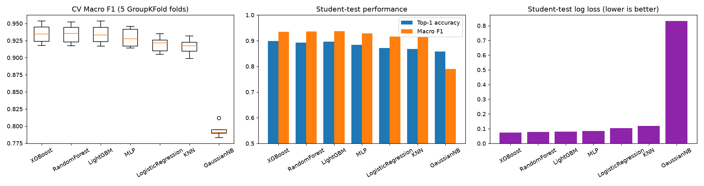
Fig. 3.1 – Left: CV Macro F1 across the 5 GroupKFold folds per model. Middle: student-test Top-1 accuracy and Macro F1. Right: student-test log loss.
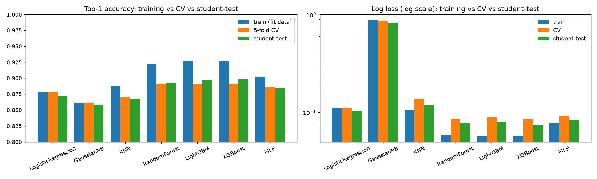
Fig. 3.2 – Over/under-fitting evidence: Top-1 accuracy and log loss on training data vs CV vs student-test.
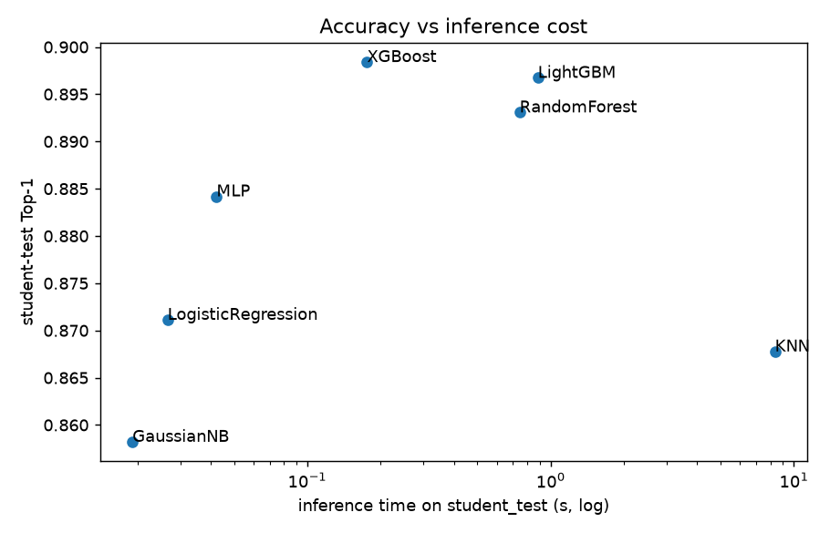
Fig. 3.3 – Student-test Top-1 vs inference time (log scale); XGBoost gives the best accuracy-to-cost trade-off.
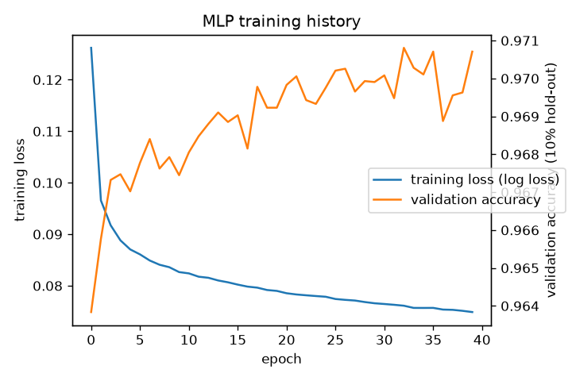
Fig. 3.4 – MLP training loss and hold-out validation accuracy per epoch (the only model with an epoch-wise training history).
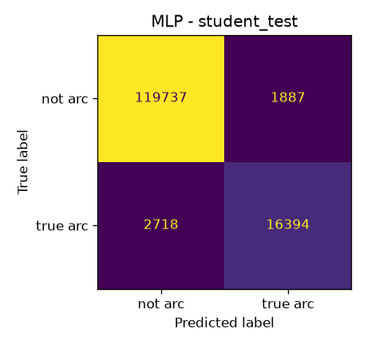
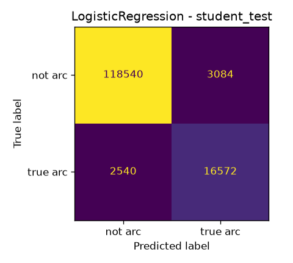
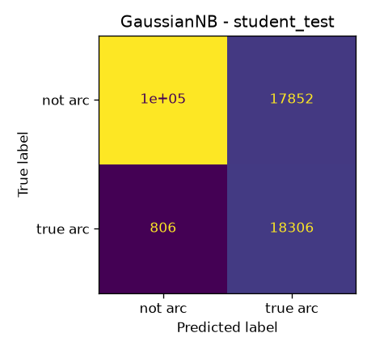
Fig. 3.5 – Student-test confusion matrices (threshold 0.5) for all seven models.
4. Bayesian Hyperparameter Optimisation (XGBoost)
Source: scripts/04_bayes_opt.py → results/bayes_opt/. Only training trips were used. The evaluator partition was not used for the search space, the objective or any threshold.
The ranges are centred on the untuned configuration, wide enough to reach shallow, strongly regularised models as well as deep ones. Log scales are used where the effect is multiplicative. 3. Objective: maximise the mean observation-level Top-1 accuracy over a 3-fold GroupKFold (by trip) on the 78 training trips. This is the same primary metric used for model selection. Three folds instead of five keep each trial at about 50 s. 4. Trials: 30, using Optuna's TPE sampler (seed 42). Total cost 1,603 s (26.7 min) on 8 CPU cores. Trial scores ranged from 0.8838 to 0.8905. 5. Best values: n_estimators 600, learning_rate 0.0102, max_depth 10, min_child_weight 3.73, subsample 0.587, colsample_bytree 0.882, reg_lambda 0.745. In short: a lower learning rate with more, deeper trees, regularised by stronger row subsampling and a larger minimum child weight. 6. Did tuning help? Only marginally. 3-fold CV Top-1 improved by 0.0004 (0.8902 → 0.8905), 5-fold CV Macro F1 by 0.0003, and student-test log loss from 0.0745 to 0.0739, while student-test Top-1 fell by 0.0015. These differences are well inside the fold-to-fold spread (CV Top-1 sd ≈ 0.025), and the tuned model is 2.7× slower at inference. We deployed the tuned model because the rule fixed in advance was “higher CV objective”; the student-test numbers were not used for this choice. Our interpretation is that the default configuration was already close to optimal, and the ceiling comes from the features and from label noise near junctions, not from capacity.
Version
CV Macro F1 (5-fold)
CV Top-1 (3-fold)
Student-test Top-1
Student-test Macro F1
Student-test log loss
Train time (s)
Inference time (s)
Untuned XGBoost
0.9349
0.8902
0.8984
0.9349
0.0745
16.5
0.18
Tuned XGBoost (deployed)
0.9352
0.8905
0.8969
0.9382
0.0739
33.7
0.49
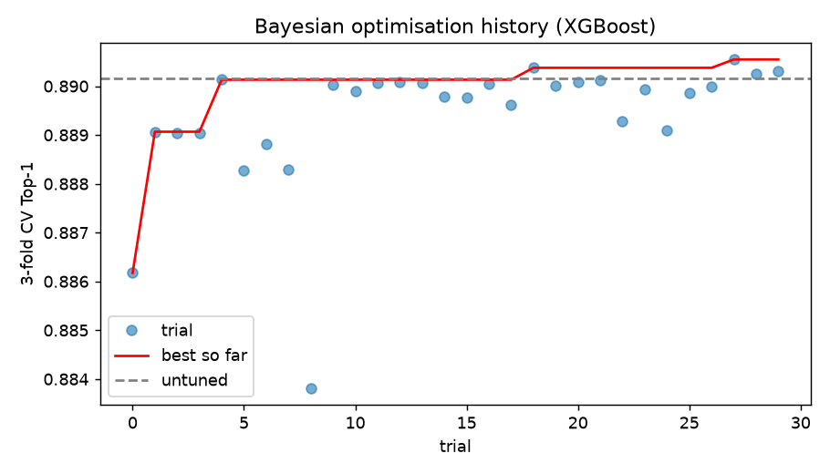
Fig. 4.1 – Optimisation history: each trial's 3-fold CV Top-1, best-so-far (red) and the untuned baseline (dashed).
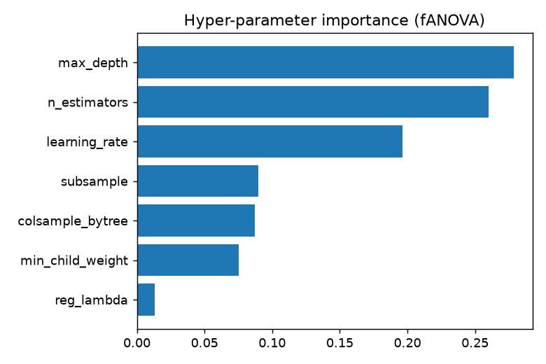
Fig. 4.2 – Hyperparameter importance (fANOVA) over the 30 trials.
1. Hidden states. At time step i, the hidden states are the candidate arcs of GPS observation i (at most 10). Each state keeps its arc id, endpoints and the projected position along the arc (along_m). The candidate-to-segment correspondence is therefore preserved, and Viterbi returns an arc id per observation. 2. Emission probabilities. The tuned XGBoost probability, normalised over the candidates of that observation and sharpened by a weight w:
log E_i(c) = w · log( p_i(c) / Σ_c' p_i(c') ), w = 2.0 (tuned)
3. Transition probabilities (following Newson & Krumm). For candidate a at i and candidate b at i+1:
d_route is the network distance from the projection on a to the projection on b. On the same arc it is the distance along the arc, allowing 15 m of backward jitter. Otherwise it is the remainder of a, plus a bounded Dijkstra shortest path from a.to to b.from on the directed graph, plus the offset on b.
d_gc is the straight-line distance between the two GPS fixes.
log T(a, b) = −| d_route − d_gc | / β, β = 2.0 m (tuned); unreachable within 2·d_gc + 150 m → −∞
This favours transitions whose driven distance matches the observed displacement, and it forbids illegal moves such as driving against a one-way arc or jumping between unconnected roads. Viterbi recurrence (log space, with back-pointers):
The best final state is traced back through ψ. Scores are re-normalised at every step for numerical stability. 4. Missing candidates and large GPS gaps.
Observations with no candidate within 60 m are skipped and returned as unmatched (−1).
When Δt > 60 s or the jump between fixes is more than 1.5 km, the chain is cut: the current segment is back-tracked and a new chain starts from the emissions alone. This avoids forcing a path across, for example, the 153,064 s gap in train trip 00000090.
Chain breaks on student-test: 2 (trip 00000000), 1 (00000056), 1 (00000065), and none elsewhere.
5. Disconnected consecutive segments. If no candidate at i+1 is reachable from any candidate at i, every transition is −∞. The chain is then cut in the same way, instead of producing an impossible jump. After decoding, fill_route inserts the shortest directed path between consecutive matched arcs that are not directly connected. This happens, for example, when a short arc is crossed between two 1 Hz samples. Gaps that cannot be bridged within 3 km stay open: 3 on student-test (2 in trip 00000000, 1 in trip 00000056), at the chain breaks caused by large GPS gaps. 6. Did HMM decoding improve the route? Yes, on every student-test trip (table and Fig. 5.2):
Pooled Top-1 accuracy: 0.8970 → 0.9361 (+3.9 points).
Pointwise continuity: 0.953 → 0.979.
Route F1: 0.899 → 0.928 with the HMM, and 0.967 after gap filling, with continuity 0.999.
Decoder tuning without leakage. β and w were chosen by grid search, β ∈ {1, 2, 3, 6, 12, 25, 50} m × w ∈ {0.25, 0.5, 1, 2}. The search used 16 training trips and out-of-fold XGBoost probabilities, so for each trip the probabilities came from a model that had not been trained on that trip. Best: β = 2, w = 2, with Top-1 0.9236 vs 0.8887 for classifier-only on the same trips. The surface is fairly flat for small β: with β ≤ 6 m and w ≥ 0.5, every setting scores 0.921–0.924. Large β combined with large w (β = 50, w = 2) drops to 0.910, because the decoder then trusts the classifier too much and road connectivity too little. Student-test trips were not used for tuning.
Method (student-test, 10 trips)
Top-1 (pooled)
Top-1 (mean of trips)
Continuity
Route precision
Route recall
Route F1
Classifier only (argmax per point)
0.8970
0.9091
0.9532
0.9091
0.8937
0.8991
Classifier + HMM/Viterbi
0.9361
0.9434
0.9785
0.9587
0.9025
0.9282
Classifier + HMM + gap filling (deployed)
0.9361
0.9434
0.9990
0.9448
0.9920
0.9673
Trip
Points
Top-1 classifier
Top-1 HMM
Route F1 classifier
Route F1 HMM
Route F1 HMM+fill
00000000
2,503
0.9529
0.9656
0.9169
0.9428
0.9368
00000007
1,354
0.9276
0.9542
0.9837
0.9878
0.9878
00000009
1,049
0.8875
0.9190
0.8676
0.8845
0.9580
00000040
2,995
0.9549
0.9743
0.9391
0.9720
0.9952
00000052
262
0.9733
1.0000
0.8814
0.9266
0.9894
00000056
3,958
0.9166
0.9575
0.9108
0.9312
0.9607
00000065
768
0.8711
0.8919
0.8966
0.9399
0.9797
00000076
1,486
0.9253
0.9704
0.8698
0.9129
0.9451
00000077
3,911
0.7760
0.8530
0.8769
0.9297
0.9420
00000091
874
0.9062
0.9485
0.8485
0.8544
0.9788
Where the HMM helped most. Trip 00000077 (+7.7 points Top-1) is an urban trip in which the classifier-only prediction frequently switches between neighbouring arcs (classifier continuity 0.959). The connectivity constraint removes those isolated switches (continuity 0.993 after decoding).
Where it did not help, or hurt:
Gap filling lowers route precision (0.959 → 0.945), because a shortest path between two matched arcs is not always the road actually driven. On trip 00000000 this lowers route F1 slightly (0.9428 → 0.9368).
Trip 00000077 is still the weakest (0.853). When the classifier is confidently wrong for a long stretch, for example on a parallel service road, the HMM keeps the wrong but connected road whenever the transition model cannot distinguish the two hypotheses (similar driven distances).
The HMM cannot recover points whose true arc is missing from the candidate set (0.16 % on student-test).
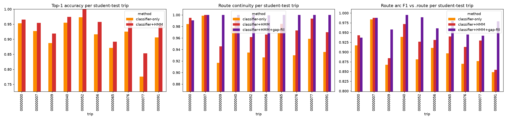
Fig. 5.2 – Per-trip Top-1, continuity and route F1: classifier-only vs HMM vs HMM + gap filling.
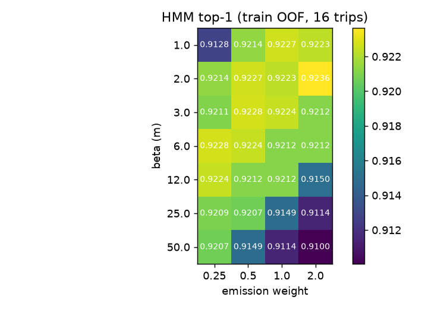
Fig. 5.1 – Decoder grid search on training trips (out-of-fold probabilities): Top-1 over β and emission weight.
6. Geographical Visualisation Using Folium
Each map is generated by scripts/05_hmm.py (trip maps) and scripts/01_eda.py (EDA maps) from the actual pipeline output. The interactive HTML files are committed in results/maps/ and results/eda/. Every map contains:
raw GPS observations (blue circles, with a timestamp tooltip);
the road network near the track (thin grey);
the reference route (thick green);
the classifier-only prediction (orange; hidden by default);
the HMM-reconstructed route (red);
a legend showing both Top-1 values;
a layer control for switching layers on and off.
Each map is automatically fitted to the trip's bounding box.
Fig. 6.2 – Student-test trip 00000009 with layer control and legend (classifier-only Top-1 0.888, HMM 0.919). Interactive: results/maps/student_test_00000009.html.
7. API, UI and Deployment
Laptop 1 – FastAPI backend (api/main.py, run with uvicorn api.main:app --host 0.0.0.0 --port 8000):
On start-up it loads models/final_model.joblib and configs/hmm_config.json.
GET /health reports the model, the decoder configuration and the trip source.
GET /trips lists trip ids only.
GET /models lists every selectable model: the deployed tuned XGBoost plus the 7 models compared in Section 3, refit by scripts/08_export_model_zoo.py, with their offline CV and student-test scores.
POST /predict {"trip_id", "model"?, "use_hmm"?} runs the full pipeline (default model: the tuned XGBoost, with the HMM on). POST /compare {"trip_id"} runs every model on one trip, computing the features once, and ranks them. The HMM parameters tuned for XGBoost are reused for every model. Each run of the pipeline: load → candidates → features → XGBoost → Viterbi → gap filling. Only then does it read the reference route, server-side, to compute accuracy.
Response: GPS points, the predicted-route polylines, metrics and timings. The reference geometry is never sent.
Safety: trip ids are validated against the directory listing, which also blocks path traversal.
Logs: every request is logged (PREDICT … / RESULT …).
No hard-coding: the evaluator folder is passed through PATHSNAP_EVAL_DIR, and nothing in the code depends on a specific trip.
Laptop 2 – evaluator UI (ui/index.html, served with python -m http.server 8501): a single-page Leaflet application. It lists the trips returned by the API. Clicking a trip sends its id to /predict, then the page draws the GPS points and the predicted route and shows the server-computed metrics. Below the metrics, an “all models” panel calls POST /compare and ranks every model on the selected trip by Top-1 with the HMM, alongside route F1 (Fig. 7.1).
Processing time per student-test trip is 0.05–0.62 s (median ≈ 0.27 s).
7.1 Evaluation-day run (10 evaluator trips)
The evaluator trips were run through the unchanged deployed pipeline (tuned XGBoost + HMM + gap filling) via POST /predict. Nothing was retrained or re-tuned afterwards.
All 10 trips processed in 0.09–0.79 s each.
Top-1 accuracy: 91.8 % classifier-only → 95.1 % with the HMM (mean over trips); 86.5 % → 94.3 % pooled over all 19,673 labelled points.
Mean route F1 93.6 %; route continuity 100 % on every trip.
The HMM improved every trip. The largest gain was trip 00000015, from 70.5 % to 90.2 %.
Route precision was lowest on trips 00000015 and 00000023 (65 %, with recall above 98 %). This is the known cost of shortest-path gap filling (Section 5).
Trip
Points
Top-1 classifier
Top-1 HMM
Route F1
00000015
6,854
0.7049
0.9022
0.7836
00000017
1,346
0.9361
0.9458
0.9367
00000023
458
0.9432
0.9541
0.7785
00000030
654
0.8073
0.8364
0.9442
00000049
2,642
0.9928
1.0000
0.9988
00000059
1,031
0.9699
0.9777
0.9559
00000067
916
0.9509
0.9596
0.9878
00000073
1,144
0.9825
0.9851
0.9937
00000087
1,399
0.9557
0.9964
0.9989
00000094
3,230
0.9325
0.9492
0.9805
Source: scripts/09_evaluator_run.py → results/evaluator/evaluator_results.csv and summary.json. The script runs the same deployed pipeline as the API; the interactive maps are in results/maps/evaluator_*.html.
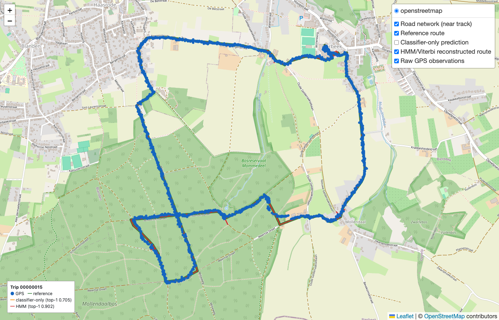
Fig. 7.0 – Evaluator trip 00000015 (Folium): GPS (blue), reference route (green) and the HMM-reconstructed route (red); legend shows classifier-only Top-1 0.705 vs HMM 0.902.
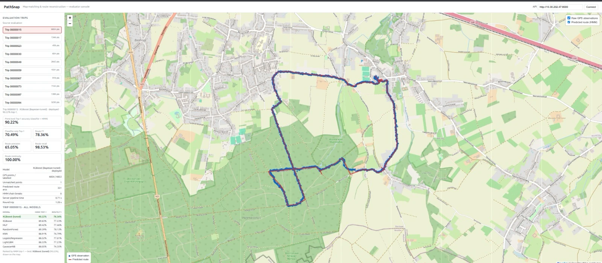
SCREENSHOT PENDING: Laptop 2 browser showing the UI connected to Laptop 1 (Source: evaluation, one trip open) (file: report/figures/laptop2_ui_evaluation.png)'">
Fig. 7.1 – Evaluator UI on Laptop 2, connected to the API on Laptop 1 (http://10.30.202.47:8000, Source: evaluation). Evaluator trip 00000015 is selected: GPS points (blue) and the HMM route (red), Top-1 90.22 % with the HMM vs 70.49 % classifier-only, route F1 78.36 %, continuity 100 %. The panel below the metrics ranks all models on this trip, using POST /compare.
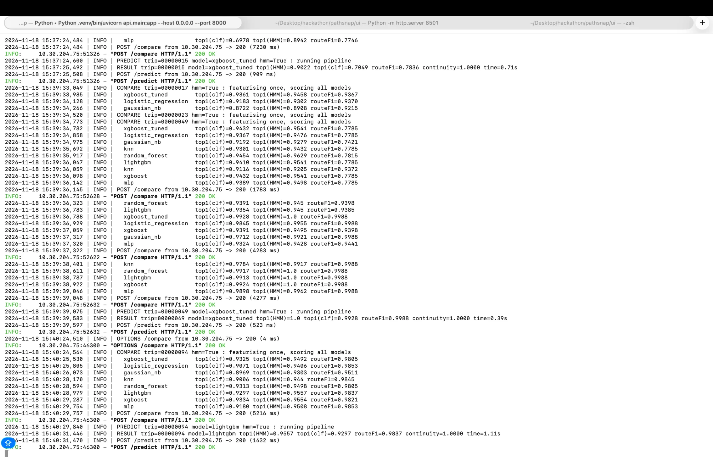
SCREENSHOT PENDING: Laptop 1 terminal with uvicorn PREDICT / RESULT / POST /predict lines from Laptop 2 (file: report/figures/api_terminal_logs.png)'">
Fig. 7.2 – API logs on the command line of the receiving laptop (Laptop 1). Every request arrives from Laptop 2 (10.30.204.75) and returns 200. COMPARE lines score all models on trips 00000017, 00000023, 00000049 and 00000094. PREDICT/RESULT lines show trip 00000015 with the deployed model (Top-1 0.9022 with the HMM, 0.7049 classifier-only), trip 00000049 (1.0) and trip 00000094 with LightGBM chosen (0.9557).
SCREENSHOT PENDING: Laptop 2 Command Prompt running py -m http.server 8501 in the ui folder (file: report/figures/laptop2_cmd_ui_server.png)'">
Fig. 7.3 – Laptop 2 (Linux) serving the static UI from ~/pathsnap/ui with Python's built-in HTTP server on port 8501.
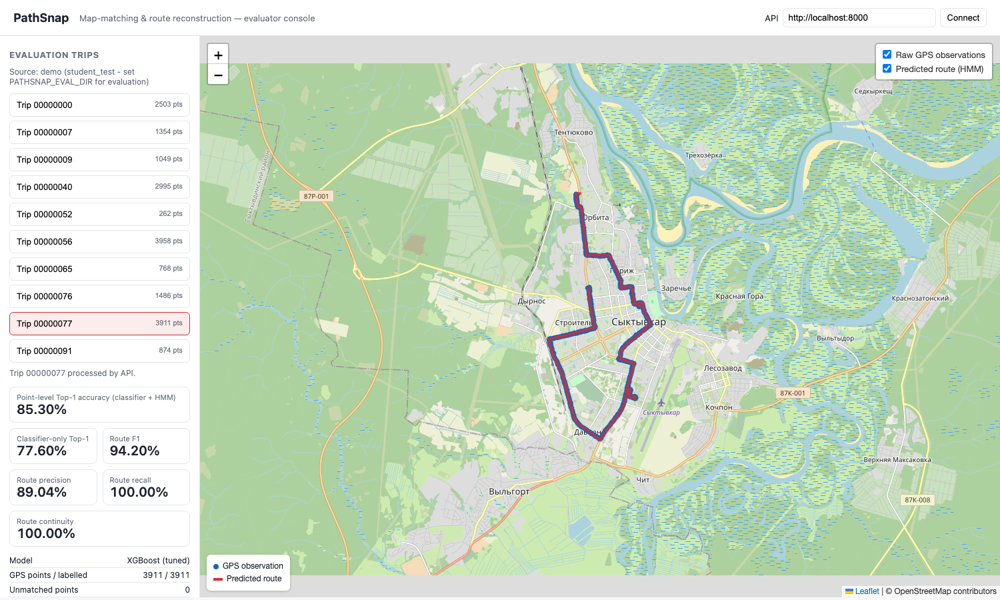
Fig. 7.4 – UI during development (student-test trip 00000077): trip list, server-computed metrics (Top-1 with HMM 85.30 %, classifier-only 77.60 %, route F1 94.20 %, continuity 100 %) and the predicted route over OpenStreetMap.
8. Academic Integrity, Limitations and AI-Assistance Disclosure
8.1 Leakage controls
Evaluator-testing data were not available during development. They were received on evaluation day and used only for inference through the deployed API (Section 7.1); nothing was retrained or re-tuned on them.
All fitting, cross-validation and Bayesian optimisation used training trips only, with folds grouped by trip.
The StandardScalers (LR, KNN, MLP) are inside the pipelines, so they are fitted on training folds only.
Decoder parameters were tuned on out-of-fold training predictions.
Student-test results were used only for development comparison and were not used to pick the deployed hyperparameters.
The predictor reads only .track/.nodes/.arcs. .route is read only by the evaluation function after prediction.
8.2 Limitations
The point-level labels are derived from .route by alignment. Near junctions the boundary between consecutive arcs is uncertain, so part of the remaining error is label noise, not model error.
The reference routes are not error-free. Two training trips were excluded because GPS and route disagree (Section 2.1).
The transition model ignores turn angles and road classes. Gap filling uses shortest paths, which slightly reduces route precision.
Evaluator-trip performance may differ from student-test performance. The trips come from many different cities, and 10 trips is a small sample.
8.3 Disclosure of AI assistance
This project was built with substantial help from an AI coding assistant (Anthropic's Claude, used through the Claude Code desktop app). We disclose its use as the event's policy requires.
What the assistant did: wrote most of the source code (data loading, projection, label alignment, candidate generation and features, the seven training pipelines, the Bayesian optimisation, the HMM/Viterbi decoder, the FastAPI backend and the UI); ran the scripts on our laptop; and drafted this report and our viva notes from the outputs of those runs.
What the team did: read the hackathon documents and set the task; supplied and organised the dataset; asked for, reviewed and tested each part; set up GitHub and the two-laptop deployment; ran the evaluation-day demo; took the deployment screenshots; and reviewed and edited this report.
Integrity of results: every metric, table and figure in this report was produced by executing the code in the repository; none was typed in by hand. Each figure can be regenerated with the scripts listed in Section 8.4.
Understanding: every team member has gone through the code, the experiments and this report, and can explain the design decisions, the models and the results.